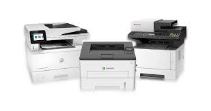

Identitas Pembuat
NIM: 607012300143
Nama: Nur Mahmuda
Kelas: D3SI4705
Mata Kuliah
Nama Mata Kuliah: Arsitektur Jaringan Komputer
Pembahasan Tentang Printer
Fungsi Printer:
Printer memfasilitasi proses produksi dokumen fisik dari dokumen digital yang ada di komputer. Fungsi printer yang utama adalah mengubah data digital menjadi cetakan fisik. Data digital itu bisa berupa teks, gambar, grafik, atau kombinasi dari semuanya.
Jenis Printer:
- Printer Inkjet.
- Printer Ink Tank.
- Printer Laser.
- Printer Multifungsi (All-in-One)
- Printer Dot Matrix.
- Printer Thermal.
- Printer 3D.
- Printer Plotter.
Pembahasan Tentang Workstation
Fungsi Workstation:
Spesifikasi Workstation yang sering dipakai:
- Workstation biasanya menggunakan minimal prosesor 8 cores hingga 64 cores, dari Intel i7, Intel i9, Intel Xeon, atau AMD Ryzen.
- Workstation kadang dibekali prosesor ganda.
- Workstation menggunakan jenis ECC (error-correcting code) RAM dengan kapasitas hingga 128 GB. ECC RAM sendiri merupakan memori yang mampu menemukan dan memperbaiki kerusakan data secara otomatis.
- Menggunakan kartu grafis dari NVIDIA atau AMD dengan kapasitas VRAM minimal 4 GB hingga 16 GB.
- Menggunakan penyimpanan internal dengan kapasitas 1 TB.
- Biasanya menggunakan lebih dari satu monitor beresolusi tinggi.
- Didukung dengan sertifkasi Independent Software Vendors (ISV), yang menjamin perangkat lunak kompatibel dan bisa beroperasi di Workstation.